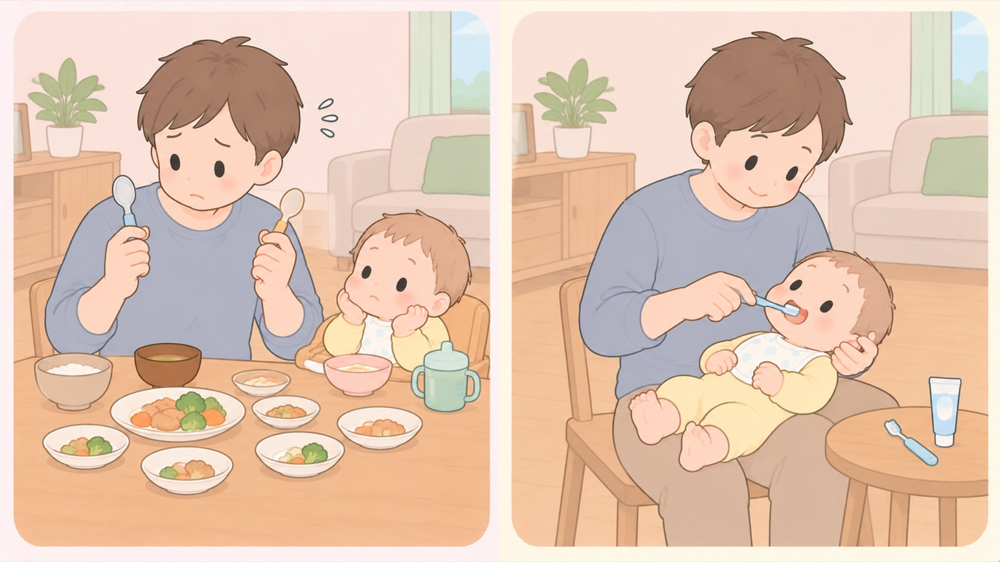

はじめに
おしゃぶりとベッドまわりで、変わったこと
おしゃぶりの歯並びへの影響は本当。ただし2歳頃までにやめれば戻る
この時期は、昔から言われてきたことがそのまま正しいものと、あとから基準ができたものが混ざります。どちらも、確かめれば分かります。

左は危険な例、右は安全な例です。- すること：おしゃぶりをやめる時期の目安を、先に決めておく
小児科と小児歯科の保健検討委員会は、1歳を過ぎたら、服に留めるひもを外して、いつも口に入っている状態をやめる、おそくとも2歳半までに中止するとしています。4歳以降になっても取れない場合は、情緒的な面を考慮してかかりつけの小児科医に相談するよう勧めています。 - しないこと：おしゃぶりを、子育ての手抜きとして使わない
同じ委員会が名指しで挙げている点です。おしゃぶりを使っているあいだも、声かけや一緒に遊ぶなどのふれあいを大切にし、子どもがして欲しいことを満足させるよう心がける、としています。 - すること：上の子のときのベビー用品は、基準が変わっていないか確かめる
ベッドガードは2017年に使用月齢の注意が出て、2026年7月からPSCマーク消費生活用製品安全法で、国が定めた基準を満たさないと販売できない製品に付く義務のマーク。ベビーベッドやライターが対象。の対象になりました。数年前に買ったものが、いまの基準を満たしているとはかぎりません。お下がりやフリマで譲り受けたものは、特に確かめます。 - すること：食器を分けるかどうかより、仕上げみがきとフッ化物に手をかける
日本口腔衛生学会は、口腔細菌が伝わったとしても、砂糖の摂取を控え、親が毎日仕上げみがきを行って歯垢を除去し、フッ化物を利用することでむし歯を予防できるとしています。フッ化物の利用は、多くの論文で予防効果が確認されている方法です。食器を分けることに労力を使うより、こちらに回すほうがむし歯を防げます。 - しないこと：「昔からあるもの」を、安全が確かめられたものと考えない
長く売られていることと、国の基準があることは別です。ベビーカーとベッドガードに基準ができたのは2026年7月で、それより前は規格のない状態で流通していました。
この時期に関わるもの
- おしゃぶりと歯並び … 言い伝えのほうが正しい例です。 小児科と小児歯科の保健検討委員会（2005年）は、 おしゃぶりを使っている子は上顎前突・開咬・乳臼歯交叉咬合の発現率が極めて高いとしています。 ただし2歳頃までにやめれば発育とともに改善し、 乳臼歯が生え揃う2歳半以降も使い続けると異常が残るとしています
- おしゃぶりの宣伝文句 … 同じ委員会は、 「鼻呼吸や舌や顎の発達を促進する」は現時点では学問的に検証されていないとしています。 一方で、愛着形成を阻害するという意見にも学問的根拠はないともしています。 どちらの方向にも、言い過ぎがあります
- 口移し・食器の共有 … 「むし歯菌がうつるから、親とスプーンを分ける」は、 2023年8月に日本口腔衛生学会が見直しています。 生後4か月の時点で母親の口腔細菌はすでに伝わっています。 食器の共有が始まるのは離乳食が始まる生後5〜6か月頃からなので、それより前からです。 学会は、日々の親子のスキンシップを通して、子どもは親の唾液に接触しているとしています。 キスや頬ずり、同じタオルで口を拭く、といった日常の接触です。 3歳児を調べた日本の研究でも、食器の共有とむし歯の関連は認められていません。 学会は「気にしすぎる必要はありません」としています
- 大人用ベッドのベッドガード … 生後18か月未満には使いません。 消費者庁がこの注意喚起を出したのは2017年です。 上の子のときに使っていた人は、この注意を知らないことがあります
- ベッドガードとベビーカーのPSCマーク消費生活用製品安全法で、国が定めた基準を満たさないと販売できない製品に付く義務のマーク。ベビーベッドやライターが対象。 … 2026年7月8日から、国の技術基準に適合したものでないと販売できなくなりました。 これから買うものと、いま家にあるものは、基準が違います
この項目の根拠
- おしゃぶりについての考え方（小児科と小児歯科の保健検討委員会・日本小児歯科学会・PDF）（新しいタブで開きます）
おしゃぶりを使用している子どもは、使用していない小児と比較して上顎前突、開咬および乳臼歯交叉咬合の発現率が極めて高いこと。噛み合わせの異常は2歳頃までに使用を中止すれば発育とともに改善されるが、乳臼歯が生え揃う2歳半、さらに3歳過ぎまで使用していると異常が残ってしまうこと。発語やことばを覚える1歳過ぎになったらフォルダーを外して常時使用しないようにし、おそくとも2歳半までに使用を中止すること。4歳以降になってもおしゃぶりが取れない場合は、情緒的な面を考慮してかかりつけの小児科医に相談することを勧めること。おしゃぶりの宣伝に使用されている「鼻呼吸や舌や顎の発達を促進する」は現時点では学問的に検証されていないこと。おしゃぶりが愛着形成を阻害するという意見については学問的根拠はないこと。子育ての手抜きとし便利性からだけでおしゃぶりを使用しないようにすること。 - 乳幼児期における親との食器共有について（令和5年8月31日・日本口腔衛生学会・PDF）（新しいタブで開きます）
親とスプーンやコップなどの食器の共有を避けるようにという情報が広がっているが、食器の共有をしないことでう蝕予防できるということの科学的根拠は必ずしも強いものではないこと。生後4か月に母親の口腔細菌が子どもに伝播していることが確認されており、食器の共有が始まる離乳食開始時期より前から感染は起きていること。食器の共有を避けるなどの方法で口腔細菌の感染を防ぐことを気にしすぎる必要はないこと。3歳児において親との食器共有とう蝕との関連性は認められていないこと。砂糖の摂取を控え、親が毎日仕上げみがきを行って歯垢を除去し、フッ化物を利用することでう蝕を予防できること。 - みんなの消費安全ナビ Vol.689 乳幼児用ベッドガードとベビーカーを購入する際には「子供PSCマーク」の表示を確認しましょう！（消費者庁）（新しいタブで開きます）
乳幼児用ベッドガードとベビーカーが2026年7月から子供PSCマークの対象になり、技術基準に適合した製品でないと販売できなくなること。 - 幼児用ベッドガードの基準改正（案）について（一般財団法人製品安全協会・PDF）（新しいタブで開きます）
大人用ベッドに取り付ける幼児用ベッドガードについて、生後18か月未満の乳幼児には使用しないとされていること。